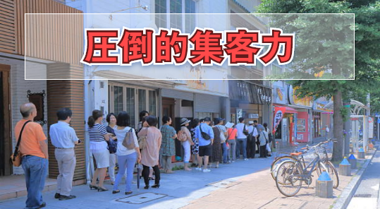
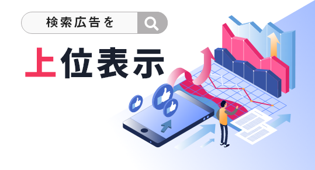
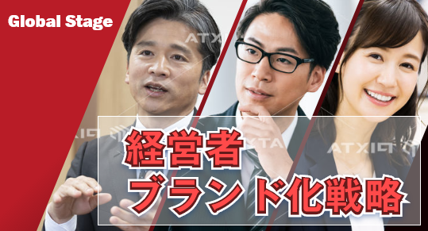
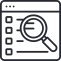

WHD DM
WHDデジタルマーケティングでできること！



デジタルマーケティング（DM）とは？

デジタルマーケティングとは、検索エンジンやWebサイト、SNS、メール、モバイルアプリなど、
あらゆるデジタルテクノロジーを活用したマーケティングを指しています。
あらゆるデジタルテクノロジーを活用したマーケティングを指しています。
デジタルマーケティングの目的
主に次のようにまとめることができます。
1
機会オーディエンス（視聴者）との接触機会をふやす
2
蓄積オーディエンスデータの
蓄積
蓄積
3
情報1人1人のニーズに合った情報を提供
「デヅタルマーケティング」と「広告」の違い
広告が効果を出すのはここから
消費者が興味を持ってから調べ始める
消費者が興味を持ってから調べ始める
1
STEPAttention
注意
商品や店舗など
の存在を知る
（きっかけ）
の存在を知る
（きっかけ）
2
STEPInterest
関心
興味をもつ
3
STEPSearch
検索
検索する
4
STEPAction
行動
購買行動や店舖
へ行く行動を起
こす
へ行く行動を起
こす
5
STEPShare
共有
共有する
興味関心のある方は自分で検索して探す
興味関心のない方に興味の「きっかけ」を作ります
興味関心のない方に興味の「きっかけ」を作ります
広告とWHD DMの大きな違い
| 内容 | WHDデジタルマーケティング（DM） | 広告 |
|---|---|---|
|
コスト
|
WHDDMは低コストで大きな成果が見込める。 | 広告は予算をかけて成果を出すことが主。 |
|
強み
|
WEB上での信憑性 | 大手媒体を活用した場合、広告を出してすぐに成果が出る |
|
弱み
|
スタートしてからわかりやすい成果が出るまでに約50日後～ | 直ぐに表記はされるけれど、ユーザーは広告としてしか見ない |
|

検索成果
|
数多くの媒体を使ったり、メディアサイトを駆使したり、インフルエンサーやSNSなどで拡散施策を実施できる為、目的を検索した際にGoogleやYahoo!など上位Jackしやすくなる。 | 大手媒体に掲載すると、すぐに検索すると出るようになりますが、検索エンジンでは広告として出るので、自社の資産とはならないしユーザーも広告としか認識しない。 |
|
拡散力
|
圧倒的な拡散力がある。1つのサイトに掲載とかではなくメディア戦略×弊社複数サイトでの告知×SNS＝検索する前に 「無意識の人にきっかけをつくる」をもっとも得意とする。 |
広告は拡散力ではなく、広告媒体の力に左右される。 |
|
営業力
|
新しい層の開拓力が非常に高い。またクライアントには広告を進めないが弊社が自社で広告を出し、よりクライアントの費用対効果が高いように行っています。 | 営業力は高いが、同じ層にしかみられないため、一過性な事が多い。また費用をかけなければ成果は比例する。 |
|
店舗
集客力 |
メディアマーケティング×SNSマーケティング×複数サイト＝お客様は「口コミ」や「News」などで来店しますので値引きをする必要がないため、適正原価で適正なモノをお客様に提供出来るので顧客満億度は高くリピーターになりやすい。 | 広告戦略で来店したお客様は、リピーターになりにくい。 また広告費＋値引き＝しわ寄せがお客様にいく事が多い。 |
|
企業
ブランド化 |
メディア戦略で宣伝するのが「企業」「社長」「商品」「店舗」などありますが、弊社はニュースサイトやプレスリリースサイトまた全国のライターが多数登録しているため、複数の角度から記事を書き、自社媒体＋全国のメディアに拡散する為、非常に効果が高いし良い情報が上位検索ででる。 | 広告は広告としてしか見られないため、話題性は期待できない。新聞などでも記事広告と実際のライターが書いた記事では信憑性が格段に違う。 |
|
新規顧客
の開拓 |
WHDDMの大きな特徴として、無意識の状態の方にAttention 「注意 きっかけ」を作ります。例えば「口コミ」「ニュース」など複数の媒体で複数の方々が「イイ」というものは自ずと気になり行動に移します。 |
新しいものは非常に効果が出やすいですが、同じ媒体に長期で掲載すると成果が下がっていく。理由は媒体のターゲットしかWEBサイトが囲めていないからです。 |
|
相乗効果
|
WHDDMの元々考え方は「掛け算」です。 顧客に飽きられないために同じものでも常に新しい角度から伝えていきます。また最初は営業目的で弊社と契約したとしても、結果的に会社や代表など会社全体の価値観が向上します。 |
広告で相乗効果は非常に難しいです。 |
|
ターゲット
への発信 |
WHDサイト各種は非常に幅広く運営していますが、年齢層、性別、地域、資金状況などに合わせてサイト×メディア×SNSなどでターゲットに対して、アプローチしていきます。 | 媒体によって得意不得意などあるため、媒体を使い分ける必要がある。例えば集客サイト、求人サイト、ECサイト、などアナログではDM,テレアポ、など名簿の質による。 |
|
2021年
以降 |
令和元年通信利用動向調査によると、平成30年から令和元年にかけて、インターネット利用者の割合が10%増加更にスマートフォン保有世帯率が8割を超えて来ています。では何を見てどういう行動に移すか？この現状に照準を合わせるためにもWHDウェブマーケティングを是非ご活用ください。 | 資本の大きな企業が有利になります。また大手サイトで広告を出す。これはWEB戦略とはいえません。21年はさらに「人と人」から「検索」が増えます。その分広告も重要です。しかし本当の意味でWEB戦略を準備しなくては存続と発展に影響が出ると考えています。 |